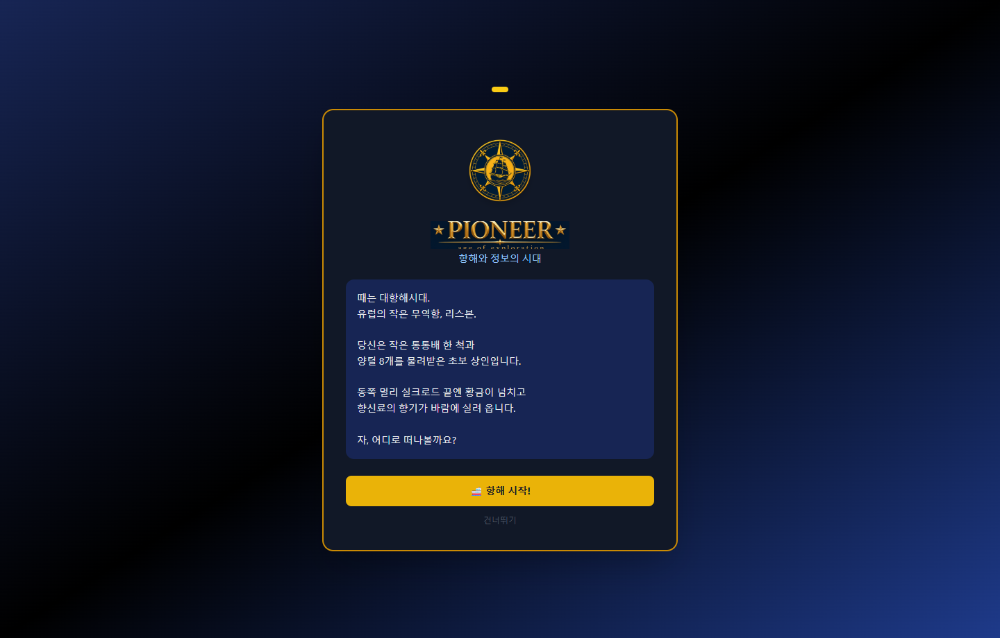
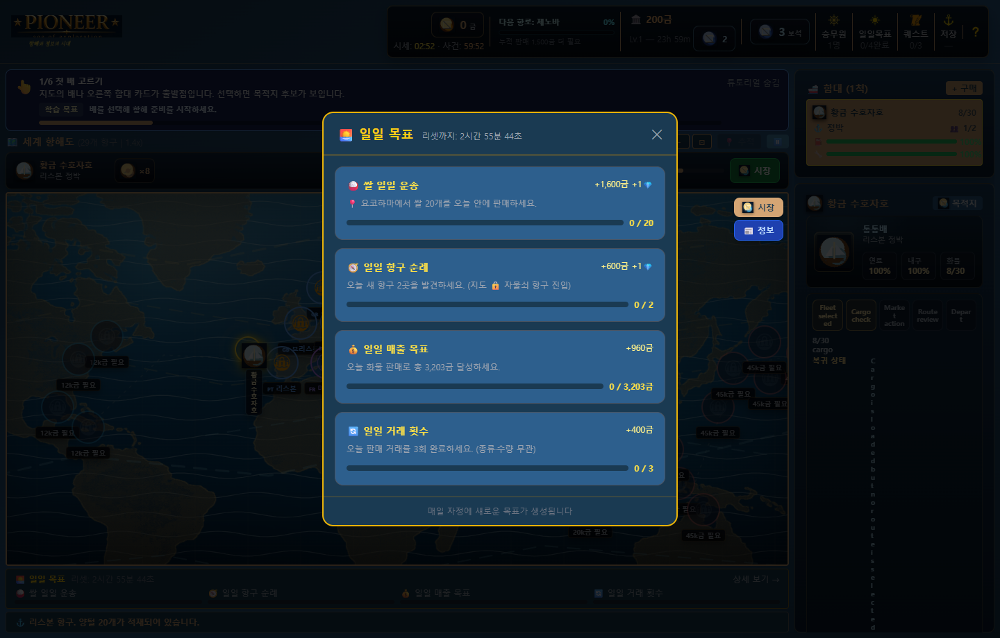
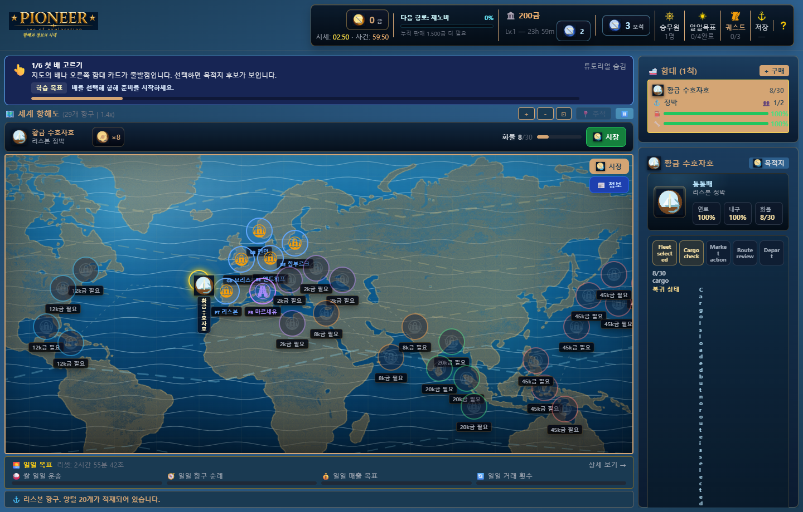
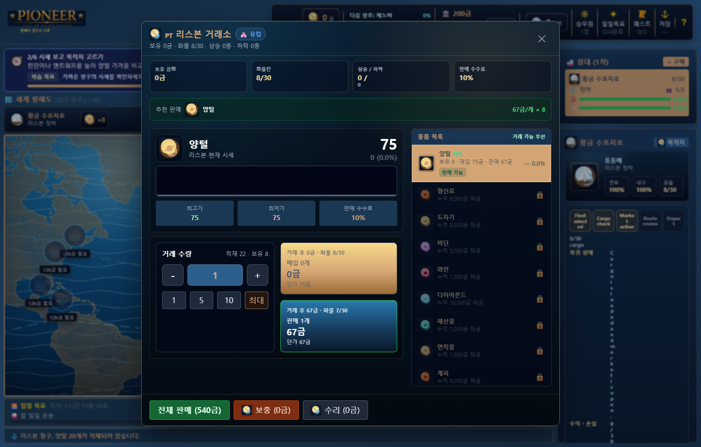

Pioneer NAN 2026 게임 소개서
**장르:** 대항해 무역 / 함대 경영 / 캐주얼 전략 시뮬레이션
**플랫폼:** React + Vite 웹 게임, Electron portable 실행파일
**버전:** v1.8.1 | **작성일:** 2026-08-08 | **실행파일:** `Pioneer_v1.8.1_portable.exe`
한 줄 소개
Pioneer는 29개 항구의 시세를 읽고, 배와 승무원을 키우며, 3분마다 흔들리는 시장과 1시간마다 터지는 대형 사건 사이에서 항로를 결정하는 대항해 무역 시뮬레이션입니다.
제출 매력 포인트
| 매력 | 플레이에서 보이는 장면 | 심사 관점 |
|---|---|---|
| 살아 있는 시장 | 거래소, 시세 타이머, 즉시 거래 피드백 | 반복 플레이마다 가격 기억이 달라지는 전략성 |
| 한 화면 의사결정 | 세계 지도, HUD, 함대 카드, 시장 버튼 | 클릭 수를 줄인 캐주얼 접근성 |
| 성장의 손맛 | 함대, 승무원, 일일 목표, 퀘스트 | 짧은 세션 후에도 다음 목표가 남는 구조 |
| AI 활용 명확성 | 가격 생성/시장 사건/개발 보조 문서화 | 공모전 주제인 AI 활용 근거 제시 |
핵심 루프
항구 시세 확인 -> 화물 매입/판매 -> 목적지와 항로 선택 -> 항해 이벤트 관찰
-> 도착 후 거래 -> 선박/승무원 성장 -> 다시 시세 확인
시장 물가 시스템
• 3분마다 모든 항구/상품의 가격이 소폭 변동합니다.
• 1시간마다 외부 충격인 대형 시장 사건이 발생해 2~4개 항구 가격이 크게 출렁입니다.
• 플레이어의 매입/판매 영향은 거래 즉시 반영되며, 3분 소폭 변동 흐름에만 누적됩니다.
• 대형 시장 사건은 플레이어 거래와 분리된 외부 변수로 처리해 “내가 만든 가격 변화”와 “세계가 흔드는 가격 변화”가 구분됩니다.
실제 실행파일 캡처 갤러리
아래 이미지는 `Pioneer_v1.8.1_portable.exe`를 실행한 뒤 내부 localhost 서버 화면을 1440x920 기준으로 캡처한 실제 플레이 화면입니다.
스토리 인트로

대항해시대 상인의 첫 출발을 짧고 선명하게 제시합니다.
리스본 거래소

보유 화물, 판매 수수료, 가격 변화, 거래 버튼이 한 화면에 묶입니다.
세계 항해도

29개 항구, 잠금 조건, HUD, 함대 카드가 동시에 읽히는 기본 플레이 화면입니다.
시장 정보

항구별 흐름과 다음 항해 판단을 돕는 정보 패널입니다.
승무원 현황

선박별 배치 인원과 능력치 기반 운용 상태를 관리합니다.
일일 목표

반복 접속 동기를 주는 단기 목표와 보상 구조입니다.
퀘스트

현재 수주/목표 진행도를 확인하는 장면입니다.
함대 상세

연료, 내구도, 화물, 승무원 슬롯을 선박 단위로 보여줍니다.
항로 선택

목적지 후보와 무역 판단을 자연스럽게 이어줍니다.
지도-시장 왕복

항해 지도에서 거래소로 빠르게 돌아오는 흐름입니다.
즉시 거래 피드백

거래 직후 자금과 화물 변화가 바로 반영됩니다.
실시간 시장 타이머

3분 소폭 변동과 1시간 대형 사건 주기를 계속 노출합니다.
구현/검증 현황
| 항목 | 상태 |
|---|---|
| 항구/상품/선박/승무원/퀘스트 기본 루프 | 구현 완료 |
| 3분 소폭 변동 + 1시간 대형 시장 사건 | 구현 완료 |
| 플레이어 거래 즉시 가격 영향 | 구현 완료 |
| Electron portable 실행파일 | `Pioneer_v1.8.1_portable.exe` 배치 완료 |
| 자동 테스트 | `node --test` 32개 통과 기준 |
제출 메모
• 게임 소개서, AI 활용 기술문서, 실행파일, 데모 영상 링크/파일을 하나의 제출 묶음으로 관리합니다.
• GDD/기획서 최종 양식 정리는 내용 잠금 후 별도 문서 양식 정돈 단계에서 처리합니다.